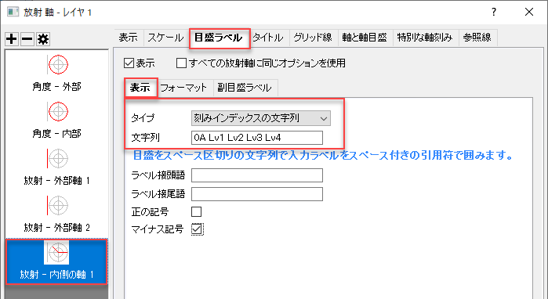

極座標プロットのトリミングと方向のカスタム
極座標-トリミング
概要
このチュートリアルでは、切り取られた極座標グラフの作成方法を説明します。

このグラフは、ラジアンスケールでの極座標散布図を示しています。グラフの軸方向がカスタマイズされ、グラフの特定の部分が表示されるようにトリミングされます。
必要なOriginのバージョン: Origin 2015 SR0以降
学習する項目
このチュートリアルでは、以下の項目について解説します。
- 放射軸を使用した極座標グラフの作成方法
- 極座標グラフを回転、目盛りラベルを四分位数として表示するなど、極座標グラフをカスタマイズする方法
- 極座標グラフのトリミング方法
ステップ
このチュートリアルは、サンプルグラフプロジェクト「Cropped Polar Plot with Custom Orientation」に関連しています。ラーニングセンターより開くことが可能です。
- ヘルプ: ラーニングセンター メニューを選択、または キーボードのF11 キーを押して、ラーニングセンターを開きます。
- グラフサンプルよりPolar Charts - Cropped Polar Plot with Custom Orientationを検索して開きます 。
極座標グラフの作成と軸のカスタマイズ
ワークブックCropped Polar Plot with Custom Orientationをアクティブな状態にします。Sheet1の全ての列を選択し、作図：特殊グラフ：シンボルθ,rを選択して極座標グラフを作成します。

軸ダイアログで軸をカスタマイズ
- 角度軸では、デフォルトの単位定義として度が使用されています。角度軸をカスタマイズします。
- 軸をダブルクリックして、軸ダイアログを開きます。左側のパネルで角度を選択し、スケールタブを開きます。 単位定義ノードを展開し、ドロップダウンリストから単位をラジアンに設定します 。主目盛にある値を0.25へ、副目盛にあるカウントを9とします。
- プロットの方向を変更するには、表示タブに移動し、左側のパネルで角度-外部を選択します。 次に示すように、方向を時計回りに設定し、軸の開始角度(度)を270を設定します。
- 目盛ラベルタブで、表示をカスタムに、カスタムフォーマットを#/#に設定します
- 適用ボタンをクリックして、これらを適用させます。
- 次に、放射軸のスケールをカスタマイズします。スケールタブに移動し、左側のパネルで放射を選択します。終了を5.01とし、（0.01は最後の目盛となります）副目盛のカウントを0とします。
- 続いて、内部の放射軸を追加します。
- 表示 タブに移動し、左パネルの上部にある放射軸を追加をクリックします。すると、放射-内側の軸1が左パネルに追加されます。
- 新しい内部軸の方向を垂直から水平に変更するために、軸位置にある、リファレンスを時計目盛板に設定し、時計を3時に変更します。流れの方向で負を選択し、目盛ラベルを軸の反対側に移動させます。
- 内側の軸1に目盛ラベルを追加するために、目盛ラベルタブの表示サブタブに移動し、タイプのドロップダウンから刻みインデックスの文字列を選択します。表示の文字列編集ボックスに0A Lv1 Lv2 Lv3 Lv4と入力します。
- 
- フォーマットサブタブに移動し、下記のように目盛ラベルのフォーマットを変更します。
- 特別な軸刻みに移動し、 軸の開始 と 軸の終わりを隠すにします。
- 適用ボタンをクリックして、これらを適用させます。
- グリッド線タブに移動し、角度軸と放射軸のグリッド線を下記のように設定します。
- OKボタンをクリックして。これらを適用させます。
- 2つの外側の放射軸を、%の半径= -40 の位置にドラッグアンドドロップします。

ミニツールバーを使用した散布図のカスタマイズ
ミニツールバーを使用して散布図をカスタマイズします。
- データをクリックして、ミニツールバーのポップアップからシンボルの形状を設定します。

- エラーバーをクリックして、ミニツールバーのポップアップから、プラスYエラーを選択して、その色を設定します。
極座標グラフのトリミング
軸ダイアログには、クロップ…ボタンがあります。これをクリックすると、極座標プロットの特定の部分を拡大および強調できるダイアログが開きます。
トリミングする範囲の選択
極座標グラフをトリミングする前に、四角形ツール を使用して、対象領域のサイズと位置データを取得できます。
を使用して、対象領域のサイズと位置データを取得できます。
- ツールバーボタンにある四角形ツールをクリックし、グラフ上に長方形を描画します。
- 四角形のサイズを変更しているときにグラフをクリアに見るために、四角形をクリックして、ミニツールバーから透過率ボタンを選択して、透過率を60%に設定します。
- 四角形のサイズと位置を調整します。四角形の領域が決まったら、四角形をダブルクリックしてオブジェクトプロパティダイアログを開き、サイズタブより四角形のサイズと位置のデータを取得します。
グラフのトリミング
- 軸をダブルクリックして、再度軸ダイアログを開きます。クロップ…ボタンをクリックしてその他ダイアログを開きます。有効にするにチェックを付けて四角形ツールのオブジェクトプロパティから取得したサイズと位置の値を入力します。
- OKボタンをクリックしてその他ダイアログを閉じます。再度OKボタンをクリックして軸ダイアログを閉じます。下記のようなグラフになります。

- ご覧のとおり、四角形に領域が切り取られています。四角形オブジェクトをクリックして削除します。最終的に下記のようなグラフが完成します。